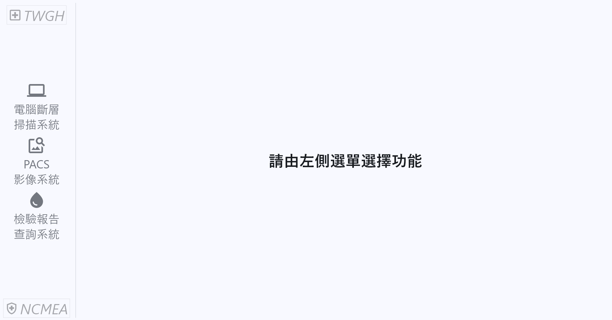

考前重點提醒
整理自 NCMEA 國家臨床醫學教育獎《擬真情境類競賽參賽注意事項說明》醫事放射組第二場
📅 2026/10/31（六）
📍 林口長庚
🩻 醫事放射組 第二場
30 秒速記
一般操作
身體診察
設備操作
給藥・輸液
放射設備
控制台螢幕
電話・999
場地設備
清除勾選
⚡
30 秒速記：做／說／不要做
✅ 一定要「實際做」
壓胸、摸脈搏、通氣給氧、插管
（模擬人會記錄給裁判）
聽診、視診、觸診、叩診的
動作
綁血壓計、夾血氧機、擺超音波探頭
GCS 評估的
疼痛刺激
用手機
實際撥出
電話、急救撥
999
點滴
掛上點滴架並黏貼
於模擬人
進場先
看控制台螢幕
：必要資訊都在畫面上
💬 只要「口述」
醫囑、護理紀錄、給藥紀錄
護目鏡、面罩、隔離衣等防護裝備
開氧氣閥門（隔空轉閥＋說「已開啟」）
放射設備操作：升床、進床、對雷射、打角度、調 collimator
抽血、備血、其他檢查：
要說出項目
電擊：
說出設定值
後隔空放電
⛔ 絕對「不要做」
移除模擬人身上的
ECG 電極貼片
調整
病床、推床高度
掀開床單
打開輸液管路的
lock
拆空針包裝（規定無須拆，拿著示意即可）
拖延進出情境、粗暴對待模擬人
!
最重要的兩件事
配合情境導演進出情境。
若因拖延導致情境進行遲滯，
團隊自行承擔影響評分的結果
。
溫和對待模擬人。
造成模擬人損壞會影響其他參賽隊伍權益。
1
一般操作原則
口述
醫囑、護理紀錄、給藥紀錄
請清楚口述
，無須書面紀錄。
省時間
競賽提供的物品
一律視為新品
，不必確認效期、包裝完整性。
是否配戴
口罩
由團隊自行決定。
實做
手套依
實際臨床模式
穿戴。
口述
防護眼鏡、面罩、隔離衣等防護設備：口述即可。
求助
需要但找不到的東西，
直接跟現場導演反應
；可以跳過的步驟，導演會告訴你們。
口述＋動作
牆氧、氧氣鋼瓶
不實際打開閥門
：把供氧衛材接上供氧設備，
隔空做轉閥門動作，並口述「已開啟閥門」
。
2
身體診察（高擬真模擬人）
實做
聽診
：確切做出聽診動作並詢問。模擬人
會有呼吸音及腸音
。
實做
視診、觸診、叩診
：確切做出動作並詢問，由現場導演回答。
問題要具體
，不能問籠統的結論。
✔ 正確
「請問兩側呼吸起伏對不對稱？」
（手摸四肢）「請問四肢冰冷或溫暖？」
✘ 錯誤
「胸部視診如何？」
「病人有休克徵象嗎？」
實做
裁判會看
壓胸、摸脈搏、通氣給氧、插管請確實進行
。模擬人會留下生理回饋記錄，供裁判賽後參考。
3
設備操作
情境中的備物都放在旁邊，可以直接使用，
依平常臨床處置去做
。
實做
量血壓
：確切做出綁血壓計的動作。
實做
血氧機
：確實夾在
正確位置
。
實做
超音波
：探頭要擺到想看的位置，導演會依情境給資訊。
實做
意識評估（GCS）
：確實做出評估動作，例如
疼痛刺激
。
口述
抽血、備血、其他檢查
：口述，而且
必須說出要抽哪些項目與內容
，主辦會視時機提供檢查報告。
口述＋動作
電擊
：
口頭告知設定值
，完成後隔空放電。
4
管路與給藥
口述
給藥
一定要說齊三項：
藥物名稱
＋
劑量
＋
施打途徑
動作
拿著空針，
不用拆包裝
，走到病人身旁示意施打。
口述
輸液或輸血
一定要說齊四項：
品名
＋
種類
＋
數量
＋
滴速
動作
要有掛上點滴架的動作，並黏貼於模擬人身上。
禁止
請勿打開 lock
。
5
放射線設備與電腦軟體
口述
操作放射線硬體設備
一律口述
：升床、進床、對雷射、歸零、打角度、調整 collimator。
禁止
請勿調整病床、推床高度
。
禁止
請勿掀開床單
。
看螢幕
依
螢幕畫面指示
操作放射線設備與電腦軟體，必要資訊會顯示在畫面上。
口令
需要受檢者吸氣、閉氣時，直接口頭指示引導。
🖥
控制台電腦畫面：考試時螢幕會出現什麼
官方規定
請
依螢幕畫面指示
操作放射線設備與電腦軟體，
畫面上將呈現必要資訊
。
也就是說：該看的資料都在螢幕裡，進場後先看螢幕、別只看檢查單。

1
2
3
參賽說明第 11 頁附圖：控制台電腦的起始畫面。中間顯示「請由左側選單選擇功能」，左側有三個系統可以點。
1
電腦斷層掃描系統
操作 CT 掃描，
照畫面步驟走
先
核對病人身分
：姓名、出生日期、病歷號要跟手圈、檢查單一致
確認檢查部位、是否要打對比劑
2
PACS 影像系統
拍完、掃完要
回來看影像
看到
危急或異常發現
（例如右位心、氣胸）要立刻通報醫師
需要時可對照舊片
3
檢驗報告查詢系統
打對比劑前查
腎功能（Creatinine、eGFR）
糖尿病人留意
血糖
與 Metformin 用藥
口述抽血後，主辦會
視時機提供報告
，記得回來查
※ 三個系統各自「要看什麼」是依我們教案整理的建議；官方只說明畫面會呈現必要資訊。
6
電話與急救通報
實做
聯絡醫師或檢查室：用
控制台檯面上的手機
，開啟後選快捷撥號（醫師、檢查室），
實際撥出
，接通後會有人回應。
遇到通話中，
稍候再撥
。
實做
急救
啟動急救通報：手機選快捷撥號
999 急救專線
，實際撥出。接通後
說出急救地點與情境相關資訊
。
7
場地與設備資訊
高擬真模擬人
Gaumard S1000
可自行連接或移除心電圖導線（胸前三導程）。
禁止
請勿自行移除 ECG 電極貼片。
生理監視器（兩種都可能遇到）
Philips IntelliVue MX450
Mindray BeneVision N15
控制台電腦系統
電腦斷層掃描系統・PACS 影像系統・
檢驗報告查詢系統
畫面說明見上方「控制台電腦畫面」。
競賽場地
林口長庚，模擬教室(一)、(二)，兩間檢查室 A／B
場地配置與動線見「林口場地結合」分頁；其中進出大門位置是依考場配置圖推論，報到時請再確認。